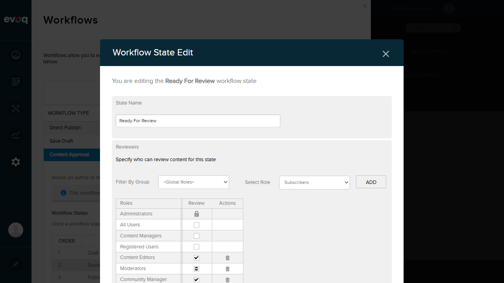
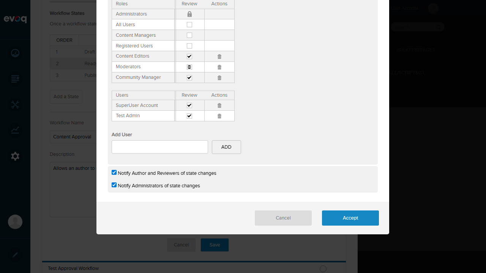
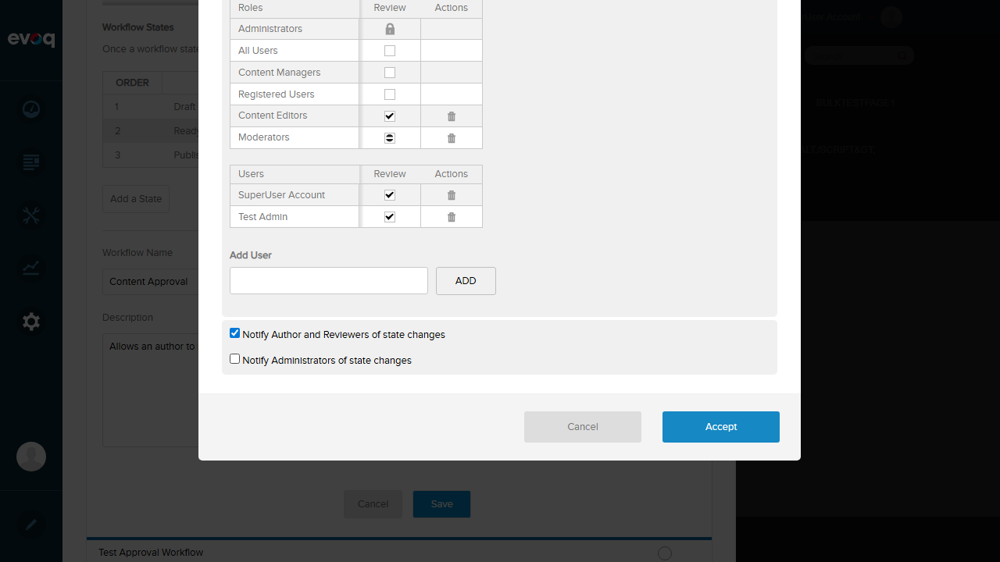
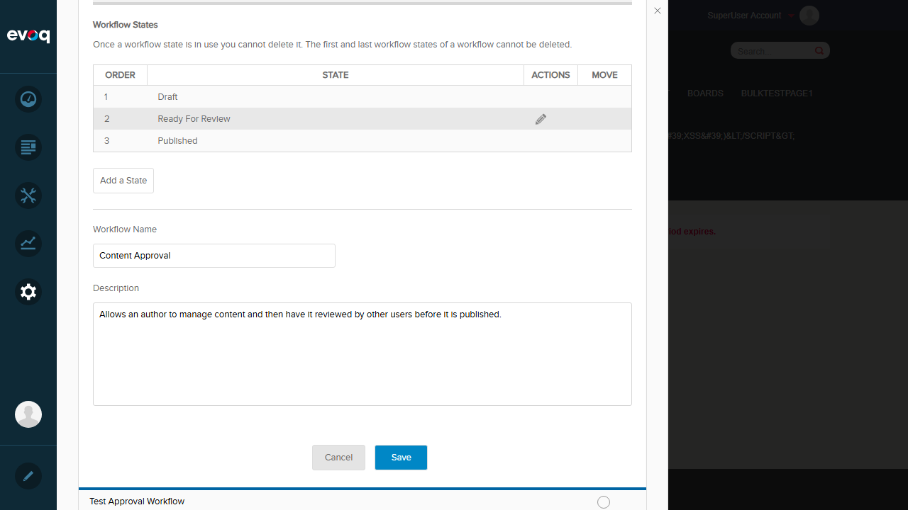
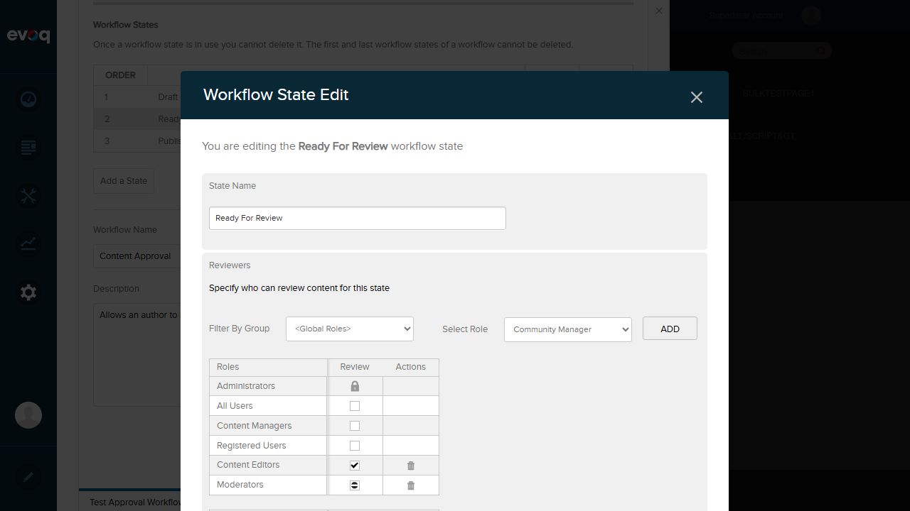

Workflow State Permissions - Test Report
Feature Details
| Feature Name | Workflow State Permissions |
|---|
| Extension | DNN_HTML (Module) |
|---|
| Priority | Medium |
|---|
| Description | Configure granular permissions for each workflow state |
|---|
| UI Location | Settings > Workflow > [Select Workflow] > [Edit State] |
|---|
| Test Date | January 6, 2026 |
|---|
Test Summary
Overall Result: All workflow state permission features are functioning correctly.
Test Results
Test 1: Add Role-Based Permissions to Workflow State
PASS
Steps:
- Navigate to Settings > Workflow
- Expand "Content Approval" workflow
- Click Edit (E) on "Ready For Review" state
- Select "Community Manager" from the Select Role dropdown
- Click ADD button
Expected Result: The selected role should be added to the Reviewers list with Review permission.
Actual Result: "Community Manager" role was successfully added to the Roles table with the Review checkbox enabled and a Delete action available.
Figure 1: Workflow State Edit dialog showing reviewers configuration

Figure 2: Community Manager role added to reviewers list
Test 2: Add User-Specific Permissions
PASS
Steps:
- In the Workflow State Edit dialog, locate the "Add User" section
- Type "test" in the user search field
- Select "Test Admin" from the autocomplete dropdown
- Click ADD button
Expected Result: The selected user should be added to the Users reviewers list.
Actual Result: "Test Admin" was successfully added to the Users table with Review permission enabled and a Delete action available.

Figure 3: Test Admin user added to users reviewers list
Test 3: Remove Role from Reviewers
PASS
Steps:
- In the Workflow State Edit dialog, locate "Community Manager" in the Roles table
- Click the Delete link in the Actions column
Expected Result: The role should be removed from the Reviewers list and become available in the Select Role dropdown.
Actual Result: "Community Manager" was successfully removed from the Roles table and appeared again in the Select Role dropdown as an available option.

Figure 4: Community Manager removed from reviewers list
Test 4: Toggle Notification Settings
PASS
Steps:
- In the Workflow State Edit dialog, locate the notification checkboxes
- Uncheck "Notify Administrators of state changes"
Expected Result: The checkbox should toggle off and the setting should be changeable.
Actual Result: The "Notify Administrators of state changes" checkbox was successfully unchecked. The checkbox responded to the click interaction.

Figure 5: Notification checkbox unchecked
Test 5: Save State Permission Changes and Verify Persistence
PASS
Steps:
- Click "Accept" button to save changes
- Re-open the "Ready For Review" state edit dialog
- Verify all changes persisted
Expected Result: All changes (added user, removed role, notification setting) should persist after saving.
Actual Result: All changes were saved successfully:
- "Test Admin" user is still in the Users table
- "Community Manager" role is not in the Roles table (correctly removed)
- "Notify Administrators" checkbox remains unchecked

Figure 6: Dialog closed after accepting changes

Figure 7: Reopened dialog confirming changes persisted
Test Environment
| Website URL | http://localhost:8081 |
|---|
| User Account | SuperUser Account (host) |
|---|
| Browser | Chromium (via Playwright) |
|---|
| Viewport Size | 1280 x 720 |
|---|
Observations
- Feature Location: The Workflow State Permissions feature is accessed through Settings > Workflow, then by editing individual workflow states. The feature is NOT located in "Module Settings > Workflow > State Permissions" as suggested in the feature documentation. The actual location is at the site-wide workflow settings level.
- Permission Types: The code suggests support for "REVIEW" permission key. The UI provides checkboxes for enabling/disabling Review permission for each role and user.
- Administrators Role: The Administrators role has a lock icon and cannot be removed - it always has review permissions (as confirmed in the code: GetPermission returns PermissionTypeGrant for AdministratorRoleId).
- Deny Permissions: The code indicates support for deny permissions (SupportsDenyPermissions returns true), and the Moderators role shows a different icon (possibly indicating a partial or deny state), but explicit deny permission testing would require more detailed configuration.
- Inherit/Override Permissions: These features were listed in the test scenarios but do not appear to have a direct UI implementation in the Workflow State Permissions dialog. The inheritance model may be implicit based on role hierarchy.
Conclusion
The Workflow State Permissions feature is fully functional. All core operations were tested successfully:
- Adding roles to state reviewers
- Adding specific users to state reviewers
- Removing roles from state reviewers
- Configuring notification settings
- Saving and persisting all permission changes
Overall Status: PASS